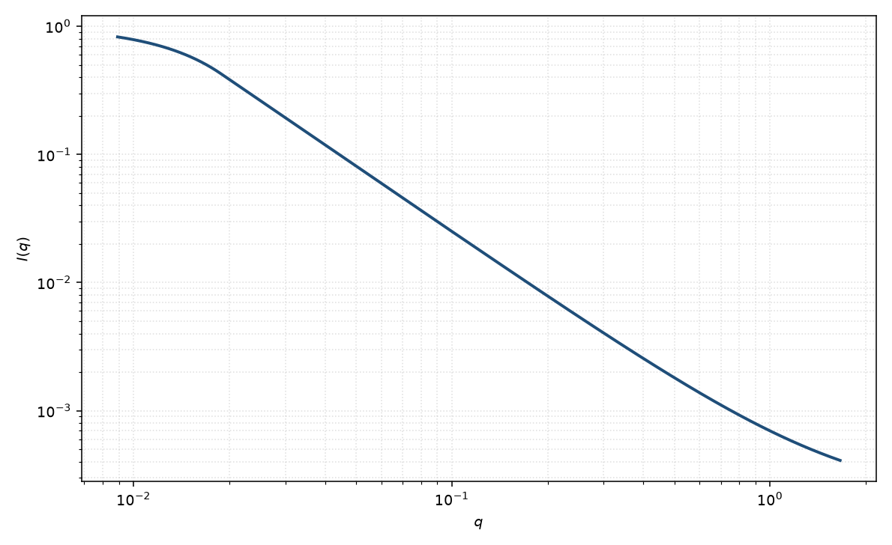

聚合物排除体积
polymer excluded volume
适用场景
良溶剂中自避链的 Flory 指数 $\nu\approx 0.588$，中间区 $I\sim q^{-1/\nu}\approx q^{-1.70}$，而不是理想链的 $q^{-2}$。Pedersen 与 Schurtenberger 给出含持久长度的蠕虫链数值/插值形式因子。
$\theta$ 溶剂回到 Debye。刚性足够高、已看见 $q^{-1}$ 时，用柔性圆柱往往更直接。
物理图像
排除体积把链段对关联改成 $g(r)\sim r^{1/\nu-3}$（在 $b\ll r\ll R_g$）。短于持久长度 $b$ 的尺度回到局域棒 $q^{-1}$。整体仍有 Guinier $R_g(L,b,\nu)$。
取向平均对溶液中的链已经做完。磁性标记子链只反映被标记段的 $\nu$ 与 $R_g$。
示意图

核心公式
出发点
自避链的成对距离不再是高斯。Flory 指数 $\nu$ 使 $\langle R^2(s)\rangle\propto s^{2\nu}$，标度区的对关联为 $g(r)\sim r^{1/\nu-3}$（$b\ll r\ll R_g$）。三维 Fourier 变换给出中间区幂律 $q^{-1/\nu}$，而不是 Debye 的 $q^{-2}$。
推导
由 $\mathrm{FT}[r^{\alpha}]\propto q^{-\alpha-3}$、$\alpha=1/\nu-3$，得 $I\sim q^{-1/\nu}$。好溶剂 $\nu\approx 0.588$，故 $1/\nu\approx 1.70$。理想链 $\nu=1/2$ 回到 $q^{-2}$，并应改用完整 Debye 而不是纯幂律。
短于持久长度 $b$ 的尺度，链局部是棒，$g(r)$ 沿弧长近似一维，中间区再接到 $q^{-1}$。整体仍有二阶矩，低 $q$ 为 Guinier。包络示意
$$I(q)\simeq I(0)\exp(-q^2 R_g^2/3)\quad(qR_g\lesssim 1),\qquad I(q)\sim q^{-1/\nu}\quad(2\pi/R_g\ll q\ll 2\pi/b).$$完整蠕虫链形式因子是数值/插值（Pedersen–Schurtenberger），本页只给出由对关联推出的标度。
低 $q$ 与渐近
低 $q$：Guinier，$R_g=R_g(L,b,\nu)$。中间：$q^{-1/\nu}$。更短尺度：$q^{-1}$，再短则看见截面 Porod。本底会伪装成更陡的尾，从而高估 $\nu$。
参数表
| 参数 | 符号 | 含义 | 单位 | 典型范围 |
|---|---|---|---|---|
| 回转半径 | $R_g$ | 整链尺寸 | Å | 由 $L,b,\nu$ 决定 |
| Flory 指数 | $\nu$ | 排除体积指数 | 无量纲 | 理想 $0.5$，良溶剂 $\approx 0.588$ |
| 持久长度 | $b$ | 局域刚性 | Å | 聚合物相关 |
| 标度 / 本底 | $\mathrm{scale}$, $B$ | 前置因子与常数本底 | 与强度单位一致 | 实验相关 |
拟合注意
取向：流动会改变表观 $\nu$。粉末/静态溶液用各向同性公式。
多分散与排除体积都改变高 $q$ 尾，联合拟合会退化。磁性标记密度若沿链不均匀，有效 $\nu$ 会偏。
可辨识性：把本底当成更陡的尾会高估 $\nu$。需要足够宽的无本底窗口。有 $q^{-1}$ 棒区时不要只用一个 $\nu$ 撑到底。
相近模型
参考文献
- Pedersen, J. S.; Schurtenberger, P. Scattering functions of semiflexible polymers with and without excluded volume effects. Macromolecules 1996, 29, 7602–7612. DOI: 10.1021/ma9607630
- Debye, P. J. Phys. Colloid Chem. 1947, 51, 18–32. DOI: 10.1021/j150451a002